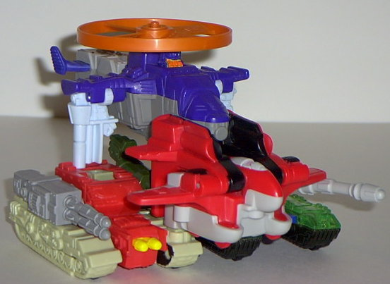
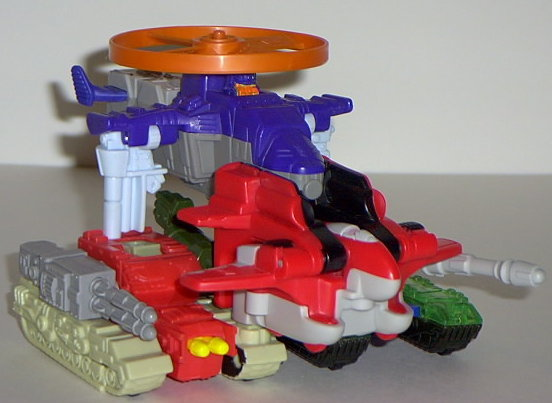

Rating : 0.9
Vehicle mode is a futuristic
tank. This mode is pretty accurate to the "official"
Armada
Giga-Con
toy, if you ignore the colors- even most of the molded details
are the same. The "claws" on the front of the tank look even more out of
place than they do on the Giga-Con toy, however, because they're a different
color than the rest of the tank. The turret and its accompanying gun are
also a bit too large proportionally, although this was probably to deal
with the extreme safety standards that are put on Happy Meal toys, since
these pieces are removable. What bugs me about this mode (and this toy),
though, are the colors. I mean, where the frag did the bright violet and
pea green come in!? It looks ridiculous! As for the Decepticon symbol,
it's on the top of the turret. Megatron also has one Powerlinx port on
the front of his right tread, and one Minicon port on the back of the same
tread.
Awww, we now know what
Megsy looked like as a toddler! He's chunky, he has stubby legs, and a
chubby face! Really, though, this mode suffers from some rather obvious
proportions problems. This takes away from the very menacing look that
the Giga-Con version of Armada Megatron has, which is certainly a shame.
You also have to take off the turret and put it back on during the transformation,
so the turret is a little prone to falling off, as it doesn't really have
much holding it on to his back. As for his gimmick, if you push down on
the turret, his right fist will swerve up slightly for "punching action",
even though it's far too weak to really be a punch. His fists also glow
in the dark, too. Oh, and Megatron has another Decepticon symbol on his
chest in this mode.
I think Megatron is
the best out of the McArmada toys, but that's certainly not saying much.
He still suffers from some weird colors and odd proportions in robot mode.
No Stats
 Decepticon
Gestalt
Decepticon
Gestalt

Rating
: 0.9
Wow. What a gestalt.
Four vehicle modes thrown together. How lovely. Although at least it's
coordinated enough where the ground vehicles are on the bottom and the
air vehicles are on the top. And this gestalt doesn't even stay together
that well-
Cyclonus
is very prone to falling
off. What a ridiculous combination.
Review by Beastbot